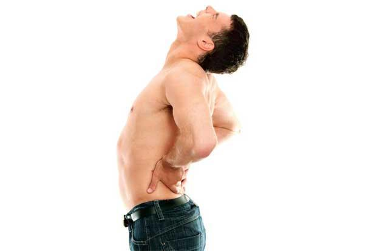

<div class="modal-dialog">
	<div class="modal-content">
		<div class="modal-header">
			<button type="button" class="close" data-dismiss="modal"
				aria-hidden="true">&times;</button>
			<h4 class="modal-title" id="appointmentModalLabel">Don’t back
				away from back pain</h4>
		</div>
		<div class="modal-body">
			<div class="row">
				<div class="col-lg-6 col-md-6 col-sm-6 blog-image">
					<br />
					<h5>Stretch properly and regularly to avoid back pain</h5>
				</div>
				<div class="col-lg-6 col-md-6 col-sm-6">

					<h5>
						Published in <a
							href="http://www.livemint.com/Leisure/nw9fFoub9qY6EoDil42e0L/Dont-back-away-from-back-pain.html"
							target="_blank">Mint-Leading Business Newspaper</a> <br><i>Mon, Jan 13 2014. 08 26 PM
						</i>
					</h5>

					<p>Back pain is not only a medical problem, it can also be a
						symptom of other illnesses</p>
					<ul class="shareIcons">
						<li><a href="https://twitter.com/DrSujWell" target="_blank"><i
								class="fa fa-twitter"></i></a></li>
						<li><a href="https://www.facebook.com/wellnessbydrsujata"
							target="_blank"><i class="fa fa-facebook"></i></a></li>
						<li><a
							href="https://www.linkedin.com/profile/view?id=12822870&authType=NAME_SEARCH&authToken=yqYt&locale=en_US&trk=tyah&trkInfo=clickedVertical%3Amynetwork%2Cidx%3A1-1-1%2CtarId%3A1436516597183%2Ctas%3Asujata%20kelk"
							target="_blank"><i class="fa fa-linkedin"></i></a></li>
					</ul>
				</div>

			</div>
			<div class="row">
				<div class="col-lg-12  blog-content">
					<p>Dehli-based Varsha Jain, 35, is the busy mother of two
						teenagers. A few months ago, she bent down to pick up keys from
						the floor and suffered a severe pain in her lower back followed by
						a spasm. She had to lie down right there. Jain was diagnosed with
						mild disc prolapse and was recommended bed rest and medicines for
						pain relief and swelling. She was also asked to do a few simple
						back-strengthening exercises, including the bridge pose. She says
						exercising and the medicines helped her recover in a month.</p>
					<p>Rajeev K. Sharma, senior consultant, orthopaedic and joint
						replacement surgeon, Indraprastha Apollo Hospital, Delhi, says a
						disc prolapse is one of the most common reasons people get back
						pain. In most cases “disc prolapses occur because of weak
						musculature”. If the muscles of the back are weak, the pressure
						can fall on the vertebral discs, which act as shock-absorbing
						cushions between the vertebrae of the spinal architecture. The
						discs are shaped like gel-filled doughnuts and a disc prolapse
						occurs when the nucleus pulposus, or the gel inside, slips out
						just a bit. The gel slipping out puts pressure on the spinal chord
						and nerves, producing pain.</p>
					<p>
						Nearly two-thirds of adults suffer from lower back pain at some
						point. Apart from weak back muscles, Dr Sharma says the cause
						could also be weak bones. He believes that in most such cases the
						patients’s diet lacks in sufficient protein, calcium and vitamin D
						supplements, resulting in weak bones. Besides, not many people pay
						attention to regular exercise to keep the bones and muscles of the
						back strong.<br> Upma Rao, supervisor, physiotherapy
						department, Columbia Asia Hospital, Gurgaon, agrees. She says she
						finds younger and younger patients coming in with lower back pain.
						Apart from an improper diet, people are spending too much time
						sitting at the desk. They also seem to be following improper
						exercise routines in the gym. Dr Rao advises patients to stretch
						properly. “Your aim should be first to get flexible and then
						strength-train. In fact, rather than going to a gym first, start
						your workout schedule by taking regular brisk walks,” she says,
						adding that a common mistake people make while sitting is to place
						a pillow horizontally near the lower back for support. Instead,
						the pillow needs to be placed vertically to support the entire
						back.
					</p>
					<p>
						In a 2012 study on information technology (IT) professionals in
						India conducted by R.K. Mehta and P. Parijat, the authors found
						that more than a quarter of those surveyed suffered from lower
						back pain. The authors are from departments of cognitive and
						learning sciences and kinesiology and integrative physiology,
						Michigan Technological University, US. The study was published in
						the journal Work.<br> Kris Isakson, a chiropractor at the
						Bangalore Chiropractic and Wellness Clinics, Bangalore, agrees
						with the findings of the Work study. He says many of his patients
						are IT professionals. Chiropractors are healthcare professionals
						who treat illnesses of the neuromusculoskeletal system, including
						back pain, neck pain and joint pain. The most common procedure
						performed by chiropractors is called spinal manipulation therapy
						(SMT). Isakson says chiropractic interventions can be very useful
						in treating mild lower back pain. “Since it’s a medicine-free
						approach, it is attractive to Indian sensibilities,” he adds.
					</p>
					<p>
						In a review of SMT published online in January 2013 in The
						Cochrane Library, a database of systematic reviews of primary
						research in medicine and human healthcare, authors S.M. Rubenstein
						and colleagues from the VU University Medical Center, Amsterdam,
						the Netherlands, found that “SMT appears to be as effective as
						other common therapies prescribed for chronic lower back pain,
						such as exercise, standard medical care or physiotherapy….
						Furthermore, no serious complications were observed with SMT.” The
						authors stated that they only considered studies of lower back
						pain where there were no underlying conditions like infection,
						tumour or fracture. Dr Sharma agrees: “I see no reason why
						alternative therapies like chiropractic care can’t be tried after
						an orthopaedic surgeon<br> has evaluated the back pain and
						given the go-ahead to<br> the patient.”
					</p>
					<p>Dr Sharma adds that regardless of how little the pain is,
						it’s best to get a professional opinion as soon as possible
						because lower back pain can also be a symptom of an illness like
						tuberculosis or cancer. “I recently had a patient in her 60s who
						came in with lower back pain and we discovered on X-ray that she
						had vertebral degeneration because of a tumour near her spine.”</p>
					<p>Lower back pain is a common medical problem that can have an
						uncommon medical reason behind it. It shouldn’t be neglected.</p>
					<p>
						<em>Sujata Kelkar Shetty, PhD, writes on public health issues
							and is a research scientist trained at the National Institutes of
							Health in Bethesda, US.</em>
					</p>
				</div>

			</div>
		</div>

	</div>
</div>